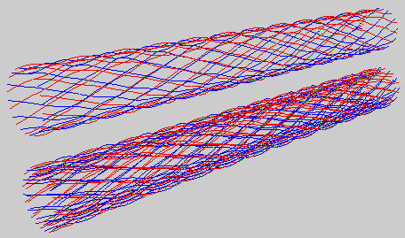

Creating spatial structures
Hesperia dome
The Hesperia dome is a enormous construction made of glass on top of a hotel in Barcelona. A parametric 3D model of this dome was created with pyFormex, which allows to evaluate geometric variations changing one or more parameters (e.g. the span or height of a dome, the amount of secondary triangles, etc.) as shown in the figure below. As illustrated, geometries can be displayed in several ways (e.g. wireframe, flat, smooth, transparent). Automated generation of finite element input files can be incorporated in pyFormex.
Hyparcap
A space frame in the form of a five-pointed star of hypars.
Scallop dome
Example showing the parametric capabilities of pyFormex.
SpaceTrussRoof
A space truss used for the roof of an industrial building. Click on the picture to view a large size animated gif.
Geodesic Dome
This example illustrates the use of surface elements. It shows four steps in the creation of a geodesic dome.
|
|
First we create two triangles. We give them different colors so that they are easy to distinguish.
v=0.5*sqrt(3.)
a = Formex([[[0,0],[1,0],[0.5,v]]],1)
aa = Formex([[[1,0],[1.5,v],[0.5,v]]],2)
|
|
|
Next we copy the triangles a number of times in two directions, generating the triangular pattern at the left.
m=5; n=5;
d = a.replic2(m,min(m,n),1.,v,bias=0.5,taper=-1)
dd = aa.replic2(m-1,min(m-1,n),1.,v,bias=0.5,taper=-1)
|
|
|
Then we copy-rotate the pattern into a hexagon.
e = (d+dd).rosette(6,60,point=[m*0.5,m*v,0])
|
|
|
Lastly the pattern is mapped on a sphere, resulting in a geodesic dome from which we give a perspective view.
f = e.mapd(2,lambda d:0.8*sqrt((m+1)**2-d**2),e.center(),[0,1])
|
Creating stent geometries
Wire stent
A single layered (top) and a double layered (bottom) wire stent. Both are generated by the script below.

#!/usr/bin/env pyformex
class WireStent:
def __init__(self,r,l,nx,ny,nb,dz,connectors=True):
dz = 0.5*dz
bump_z=lambda x: 1.-(x/nb)**2
base = Formex(pattern('1')).replic(nb,1.0).bump1(2,[0.,0.,dz],bump_z,0)
base = base.scale([1./nb,1./nb,1.])
NE = base.shear(1,0,1.)
SE = base.reflect(2).shear(1,0,-1.)
NE.setProp(1)
SE.setProp(3)
cell1 = (NE+SE).rosette(2,180)
if connectors:
cell1 += Formex([[NE[0][0],SE[0][0]]],2)
cell2 = cell1.reflect(2)
cell1 = cell1.translate([1.,1.,0.])
cell2 = cell2.translate([-1.,-1.,0.])
dx = 4.
dy = 4.
F = (cell1+cell2).replic2(nx,ny,dx,dy)
F = F.translate([0.,0.,r])
self.F = cylindrical(dir=[2,0,1],scale=[1.,360./(nx*dx),l/ny/dy])
def all(self):
return self.F
clear()
F = WireStent(10.,200.,12,12,4,1.).all()
G = WireStent(8.,200.,12,12,4,1.).all()
draw(F)
draw(G)
draw(F.translate([0.,30.,0.]))
Balloon expandable stent
pyFormex can be used for the parametric design of balloon expandable stents. As illustrated below, both the geometric design and the mesh can easily be modified.
Creating illustrations
Stars
pyFormex can also be used for other purposes. These collection of stars was generated by the script shown below.
#!/usr/bin/env pyformex
from numpy import random
nstars = 100 # number of stars
npoints = 7 # number of points in the star
noise = 0.3 # relative amplitude of noise
displ = nstars*0.6 # relative displacement
def star(n,noise=0.,prop=0):
m = n/2
f = Formex([[[0,1]]]).rosette(n,m*360./n).data()
if noise != 0.:
f = f + noise * random.random(f.shape)
P = Formex(concatenate([f,f[:1]]))
return Formex.connect([P,P],bias=[0,1]).setProp(prop)
Stars = Formex.concatenate( \
[ star(npoints,noise,i).translate(displ*random.random((3,))) \
for i in range(nstars) ])
clear()
draw(Stars)
Other illustrations
Last modified: Tue Oct 16 19:33:53 CEST 2007